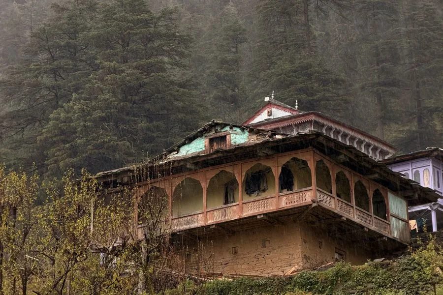
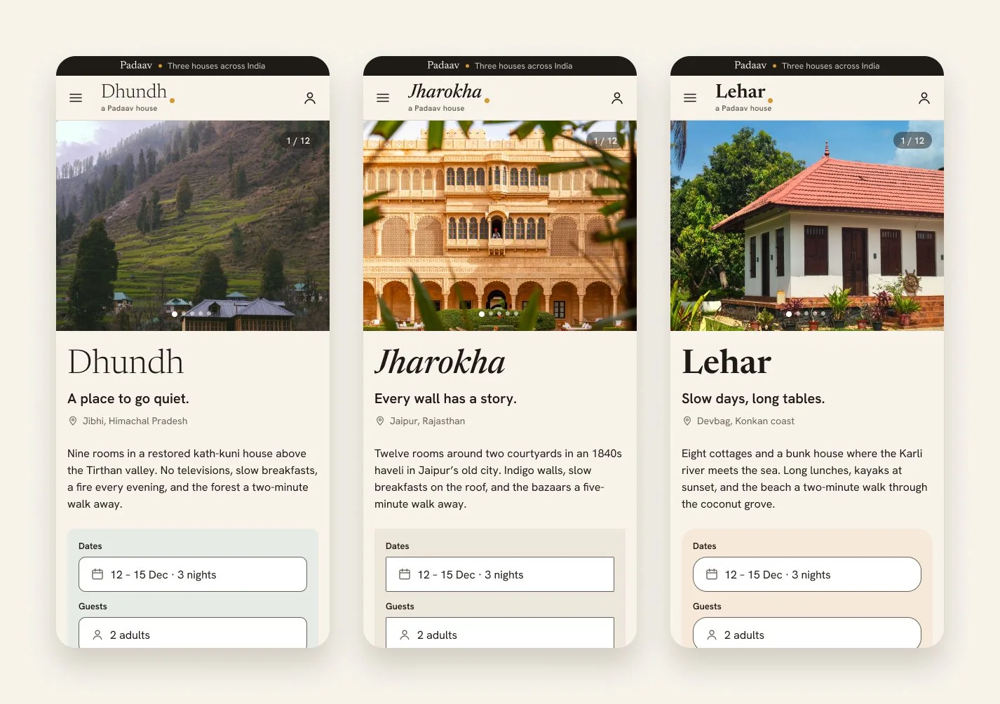
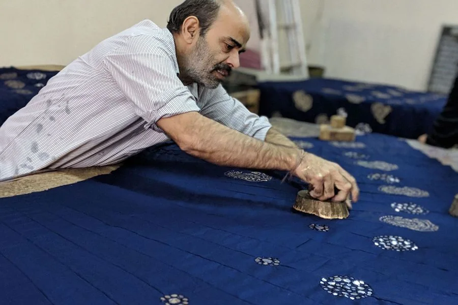
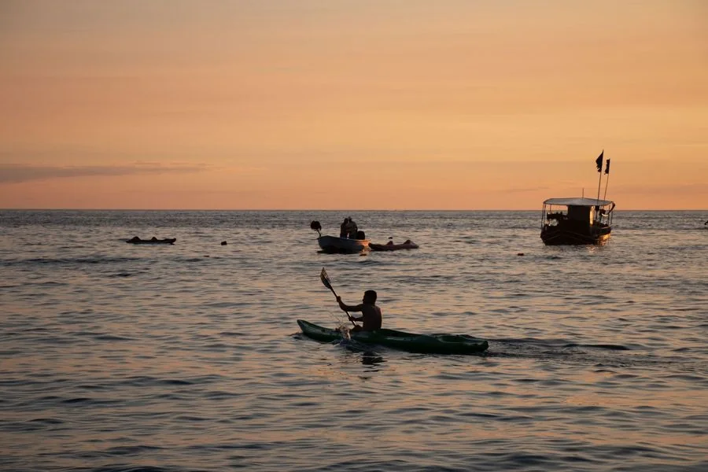
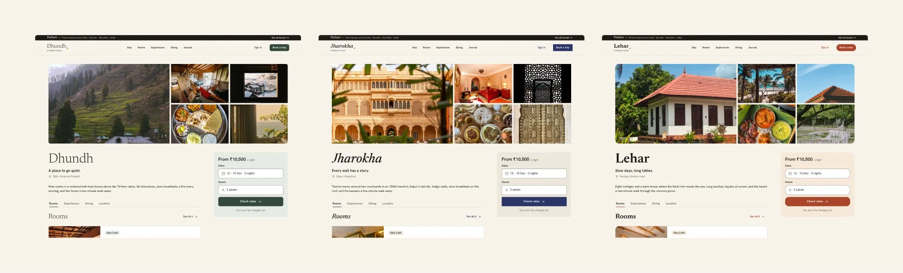
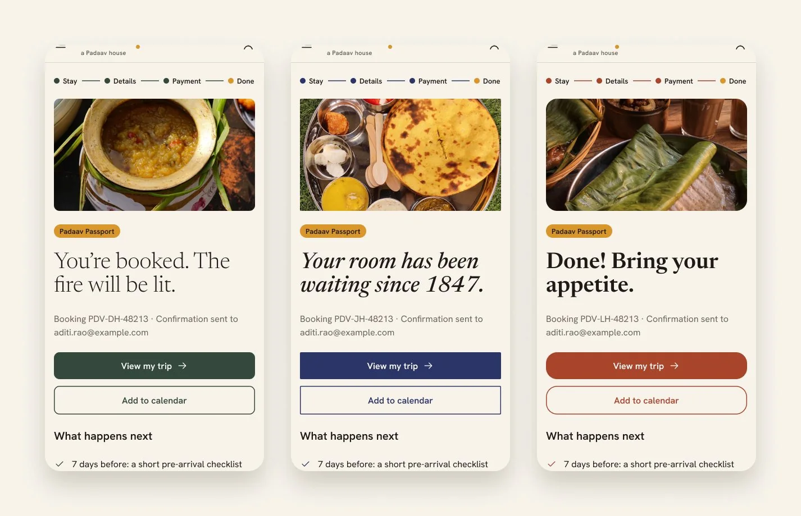

Dhundh
Himalayas. “A place to go quiet.” Slow, earthy, warm wood and mist.
Three boutique stays in India, one design system. A brand built from strategy to 304 screens in ten days, with AI doing the heavy lifting and judgement doing the deciding.

Padaav runs three small properties: a kath-kuni mountain house in Himachal, an 1840s haveli in Jaipur and creek-side cottages on the Konkan coast. Each one is loved locally, but guests who stay at one rarely know the others exist.
The brief: make each house feel unmistakably of its place, make all three feel unmistakably Padaav, and do it with one system the team can run without rebuilding everything three times.
Indian boutique groups tend to pick an extreme: one look everywhere (great recognition, flattened places) or every hotel on its own (local, but no family). I chose an endorsed brand architecture. Each house leads with its own name, and is always “a Padaav house”.
The persona that justifies the whole system is the Collector: a guest who stays at one house, loves it, and wants the same care somewhere new. The Padaav Passport (stamp all three, get a night free) turns that into a product feature.

Himalayas. “A place to go quiet.” Slow, earthy, warm wood and mist.

Jaipur. “Every wall has a story.” Refined, storied, indigo and brass.

Konkan coast. “Slow days, long tables.” Sunny, social, laterite and sea.
Padaav means a halt on a long journey. The identity takes that literally: a route line that travels and pauses at an ochre halt dot. The dot is the one thing that never changes. It marks your stay dates in the date picker, your current step in booking and arrivals on the staff room board.
Each house flexes four things, mapped from its personality sliders: colour, corner radius (2 to 20px), motion speed (220 to 420ms) and display type style. Paper, ink, the UI typeface and the halt dot stay shared.

Everything a brand can change lives in a single Figma variable collection with four modes. Components never hold a raw colour, radius or font; screens never hold a raw component style. Switch a frame’s mode and the whole screen becomes another house.
Discover, book, stay and come back: collective home, search with a map, compare houses, rooms, a nine-step booking flow with UPI and part-payment, digital key, concierge chat, bill, review, Passport and gifting. Plus 66 loading, empty and error states, a 12-screen staff console and emails in four brands.
Each house variant has its own rooms, prices, food, people and arrival details, so the screens read as product work, not recoloured copies.


| Detail | Why |
|---|---|
| Prices always show their basis and taxes before payment | Indian travellers are used to surprise charges at checkout. Trust is the product. |
| OTP-first sign in, UPI first at payment | That’s how people in India actually log in and pay. |
| Cancel flow offers “change dates instead”, keeps “Keep my booking” primary | Retention without dark patterns: the refund is shown before you commit. |
| Errors use icon + text + border | Never colour alone. Every state says what happened and what to do next. |
I used Claude with the Figma MCP to research the market, draft strategy, generate token JSON and build components and screens programmatically in my Figma file. That’s how a 304-screen system fits in ten days. Every decision went through review, and a lot of AI output was changed or thrown away.
The speed came from AI. The taste, the edits and the reasons are mine.
When every visual decision is a token, changing your mind costs minutes, not days. That made it easy to take risks early (four typefaces, AI imagery) and pull them back once they didn’t work.
Next I’d test the booking flow with five real travellers, hand-draw the final wordmark, and add a “Journeys” product: multi-house trips booked in one go, the natural next step for the Collector.